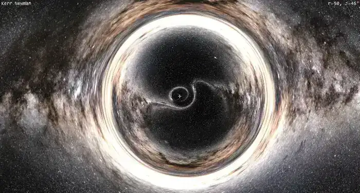
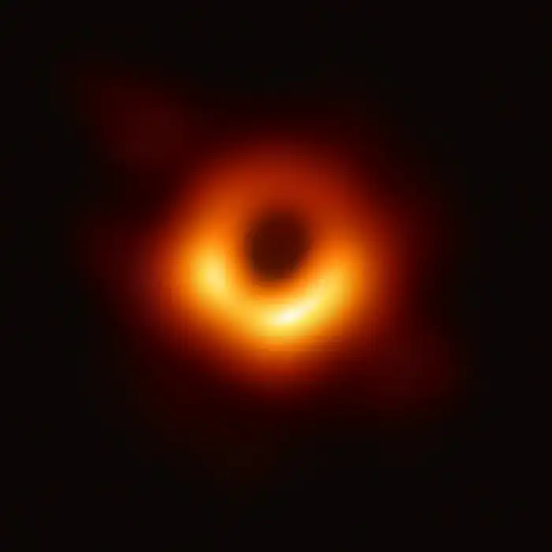
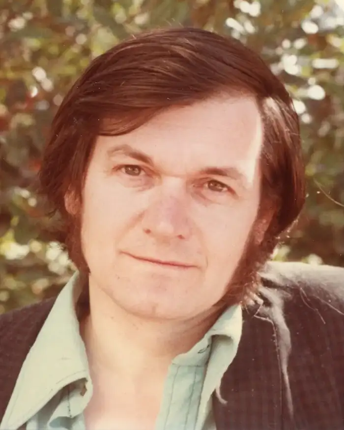

The conjecture
In 1969 Roger Penrose proposed that general relativity forbids naked singularities: whenever matter collapses, an event horizon forms and hides the singularity from outside observers. The weak version covers gravitational collapse; the strong version says no observer anywhere encounters a singularity that is not hidden.
Maps, diagrams and images






The motivation is that a visible singularity would break predictability. Physics at a singularity is undefined, so if light could escape from one, the future of the universe would not be determined by its present state.
The state of the proof
The weak conjecture is supported by every numerical simulation of collapse performed so far, and by the observed spins of black holes, which sit below the Kerr limit that would expose a singularity. The strong version is more contested: there are numerical solutions in which it appears to fail, and the question is entangled with the information paradox.
Penrose shared the 2020 Nobel Prize for the singularity theorems that made the conjecture precise. The prize was for the theorems, not for a proof of the conjecture, which remains open.
Documented: the singularity theorems, and the Kerr limit on black hole spin.
Well supported: the weak conjecture, in every collapse simulation to date.
Contested: the strong conjecture, with numerical counterexamples in some settings.
Not proved: either version, in general.
Why it matters: it decides whether general relativity is a complete theory of the classical world or one that fails in public.
Why it is in the archive
Because it is a live debate with no fringe attached — a clean example of physics arguing about a conjecture that matters and cannot yet be settled, which is the category the archive tries hardest to label honestly.
Open resources on this topic
- BookWeak cosmic censorship in gravitational collapse with astrophysical parameter values — ['Umpei Miyamoto', 'Sanjay Jhingan', 'Tomohiro Harada'] · 2013 (Internet Archive, free to read)
- BookCosmic Censorship in Lorentz Violating Theories of Gravity — ['Michael Meiers', 'Mehdi Saravani', 'Niayesh Afshordi'] · 2015 (Internet Archive, free to read)
- BookIs It Really Naked? On Cosmic Censorship in String Theory — Andrei V. Frolov · 2004 (Internet Archive, free to read)
- PapersOpen-access articles: DOAJ · PubMed Central · Internet Archive Scholar
- BooksPublic-domain and borrowable copies: Open Library · Project Gutenberg · Google Books
More images
Cite this page
Momin, S. (2026). Cosmic Censorship. The Larger World Archive. https://drsamonline.github.io/LARGE_GLOBE/cosmic-censorship.htmlMomin, Sohil. “Cosmic Censorship.” The Larger World Archive, 2026, https://drsamonline.github.io/LARGE_GLOBE/cosmic-censorship.html.Momin, Sohil. “Cosmic Censorship.” The Larger World Archive, 2026. https://drsamonline.github.io/LARGE_GLOBE/cosmic-censorship.html.@misc{cosmic2026cosmic,
author = {Momin, Sohil},
title = {Cosmic Censorship},
year = {2026},
howpublished = {The Larger World Archive},
url = {https://drsamonline.github.io/LARGE_GLOBE/cosmic-censorship.html},
note = {Last reviewed 20 November 2026}
}Last reviewed 20 November 2026 · Corrections policy · this page is not peer reviewed
Sources for this page
- Wikipedia, “Penrose–Hawking singularity theorems” — the mathematics behind the conjectureen.wikipedia.org
- Wikipedia, “Naked singularity” — the object the conjecture forbidsen.wikipedia.org
- Wikipedia, “Kerr metric” — the spin limit that mattersen.wikipedia.org
- Wikipedia, “Roger Penrose” — the work and the prizeen.wikipedia.org